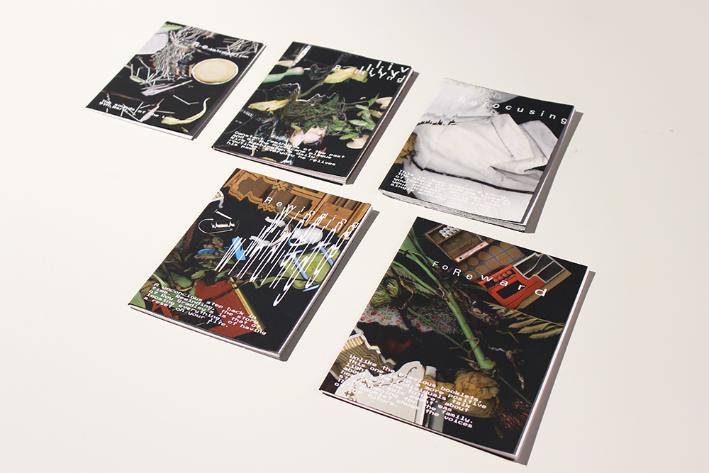
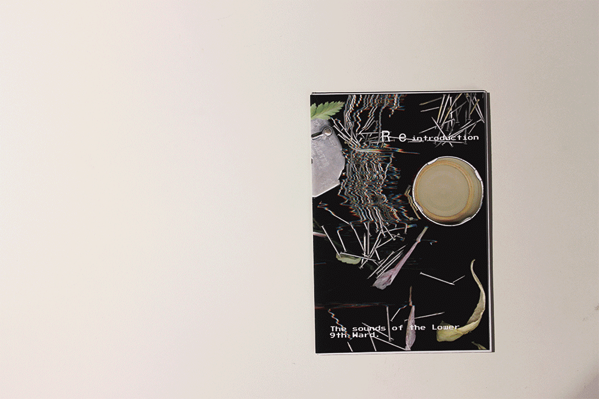
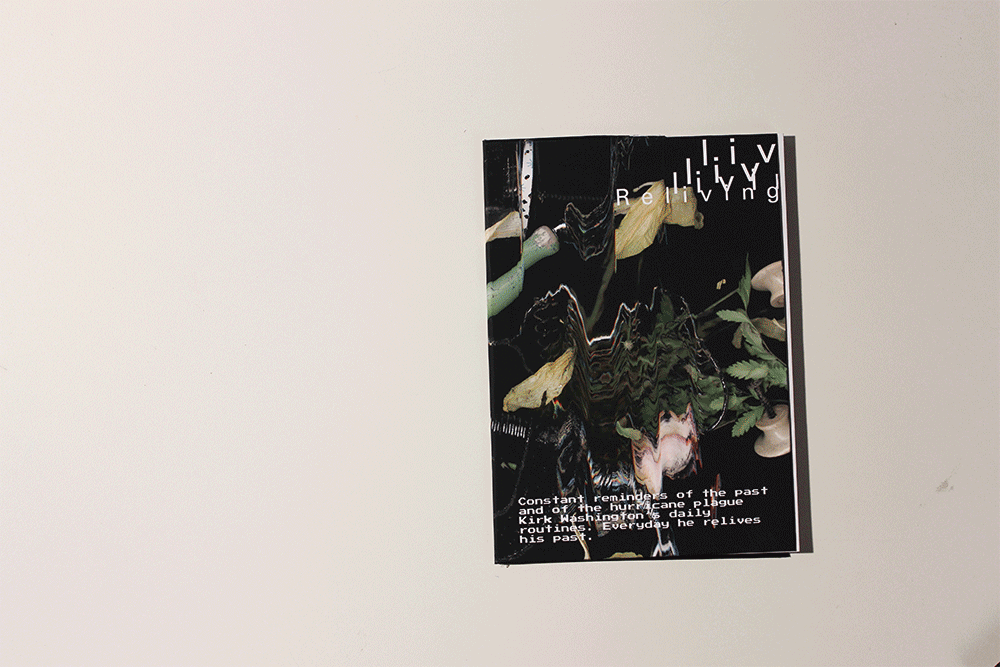
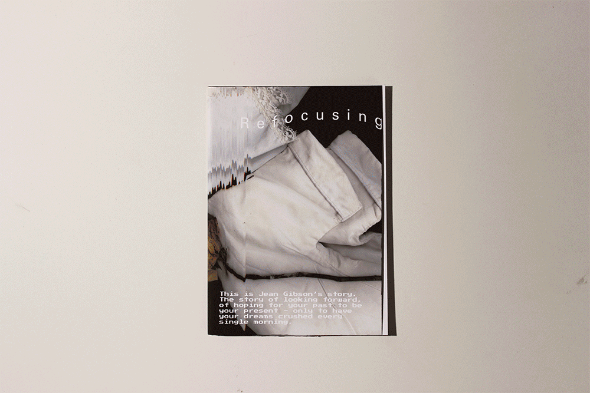
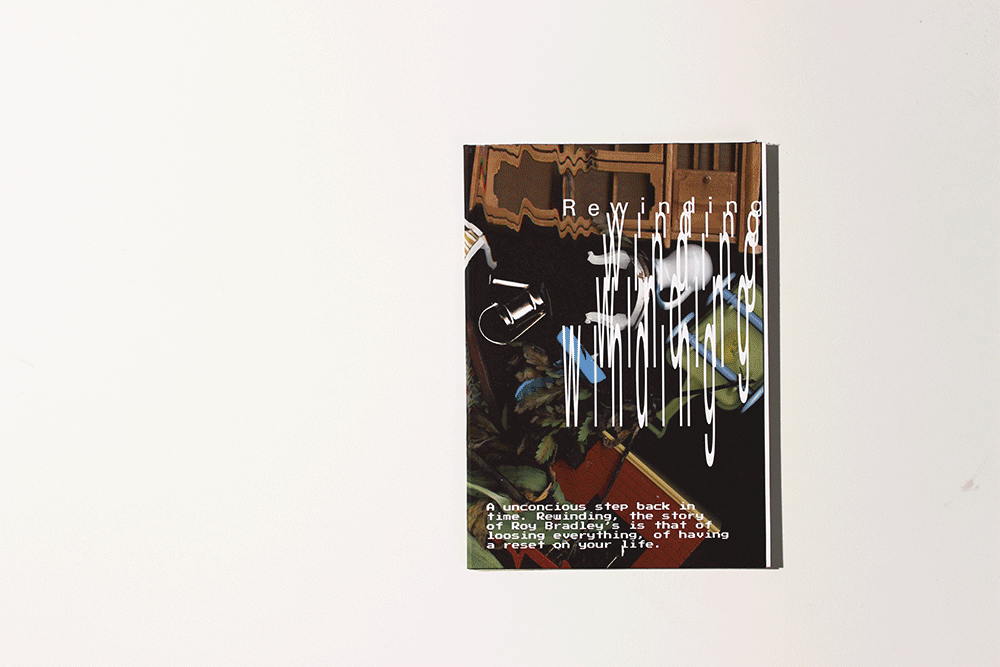
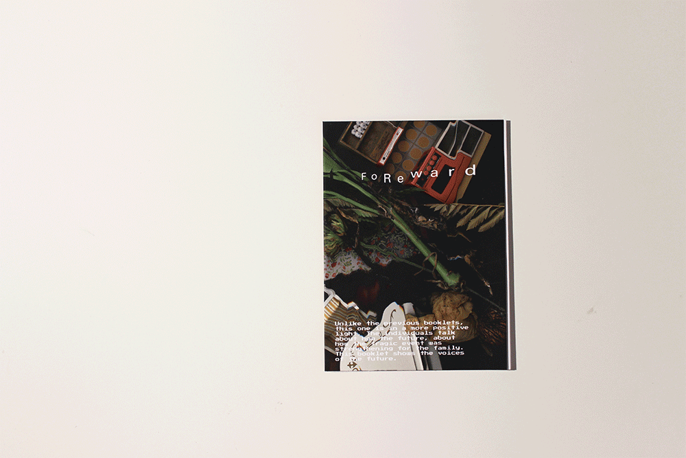

For this project we were given a transcript based on a podcast by “This American Life”. Our task - to take this transcript that describes a walking tour of the Lower 9th Ward, 10 years after Hurricane Katrina and bring it’s text to life.

I decided to focus on the subjects’ tone of voice, of when it is raised and loud and when it is so faint one may even miss it if you’re not paying enough attention. I try to visualize the key concept of each subject in a individual booklet; I did not want to create one book because I wanted each of the subjects to have their own space to articulate and visualize their story. All of the booklets have something to do with going back in time, of rewinding, or reliving a moment. Even though the hurricane happened ten years ago, these individuals will never forget what has happened, no matter how hard they try.

The first of the five booklets is the introduction, it introduces the context of the Lower 9th Ward as well as begins to describe to the user how type will be manipulated. Throughout the book there will be the interviewer - which is displayed in a aligned monospace type - this is because I did not want the user to focus on the interviewer, but instead the subject. There is also the subject, who has three voices - regular, yelling and the whispers. The yells are horrifying parts of the interviews and I tried to illustrate the shakiness and haste speed in which the subject uses to speak by writing them in a fast manner. Each booklet has been written by a different individual to attempt at assigning a different personality and voice to each subject. If you are not concentrating hard enough, you might even miss the whispers that take place within the podcast. These, however, are often the most powerful - these messages are almost haunting. They are not chaotic as the yells, they are soft and slow - the subject breaks down and their voice often cracks or shakes. As you go forward into these booklets, I want the user to keep in mind that these individuals are survivors, they have come out of the hurricane and try to look forward, even though they are constantly reliving the past, they wake up every morning looking forward. They are trying to break the cycle but they can’t.

The first booklet is based on the life of Kirk Washington and how constant reminders of his past and of the hurricane plague his daily routine. His story is that of trying to move on. The story of trying to leave the past behind, however, no matter what he does, he is constantly transported back to the night the hurricane hit.

Jean Gibson’s story is one of looking forward, of hoping for your past to be your present - only to have your dreams crushed every single morning. Jean Gibson has had everything taken away from her - her family, her house, her job - everything. Gibson, however, has not lost her personality, her voice. Gibson constantly tries to look forward. Everyday she wakes up, everyday is a new day, everyday she hopes for her old life back - she is slowly coming to terms with the idea that it is not coming back.

A unconscious step back in time. Rewinding is the story of Roy Bradley’s loss of everything - of having a reset on your life. The story of a failed dream. Bradley wanted to move up in the world and he was moving up - unit the storm. The storm ruined everything. His house was taken away. His belongings, gone. Their friends and family - gone. His dreams - dead.

The last booklet, unlike the previous is seen in a more positive light. The individuals talk about the future, about how the tragic event was strengthening for the family. I thought it would be fitting to end the series on this note as these are the voices of the future, not of the past. The stories in this last booklet are almost opposite to the previous stories, instead of blood curdling yells, the higher volume suggests happiness and excitement. These conversations remind us to think of the good things and not dwell.